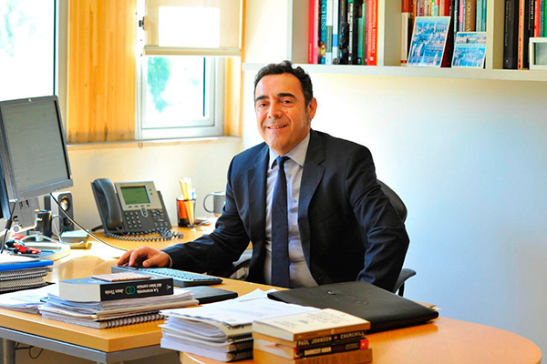

Cuerpo Administrativo del CETIS 20
Dirección
Mtra. Dafné Alejandría Alcocer Zetina
Responsable de la planeación, organización y control de las actividades académicas y administrativas del plantel.
directora@cetis20.com

Subdirección Académica
Lic. Roberto Hernández García
Coordina los procesos de enseñanza, aprendizaje, evaluación docente y da seguimiento al plan de estudios.
subdirector@cetis20.com
Servicios Escolares
Mtro. Javier López Mendoza
Gestiona procesos de inscripción, reinscripción, certificación y control escolar de los estudiantes.
serviciosescolares@cetis20.com